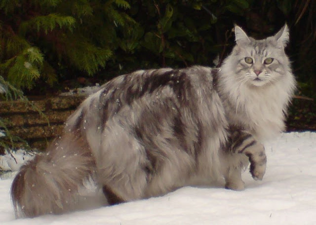
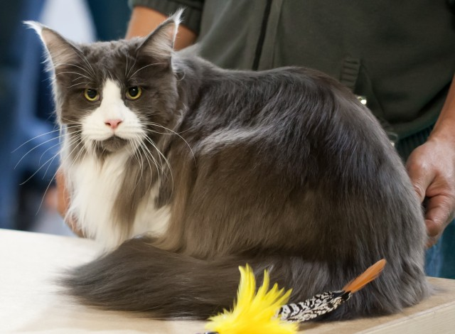

Nguồn gốc của mèo Maine Coon đến nay vẫn còn là bí ẩn, nhưng có điều chắc chắn là chúng có gốc gác từ một giống mèo châu Âu, có thể là mèo Ankara hoặc mèo rừng mưa Nauy – những chú mèo thường đồng hành cùng người Viking trong những chuyến đi biển dài ngày. Nhiều khả năng những chú mèo này đã được người Viking mang đến Bắc Mỹ từ nhiều thế kỷ trước khi Colombus tìm ra châu Mỹ. Những chú mèo này sau đó đã giao phối với các giống mèo hoang bản địa và qua một quá trình chọn lọc tự nhiên hàng thế kỷ đã cho ra đời mèo Maine Coon.
Trong suốt nhiều thế kỷ sau đó, mèo Maine Coon phát triển rất mạnh về số lượng, chúng được nuôi cho cả mục đích bắt chuột và làm thú cưng. Đến đầu thế kỷ 20, mèo Maine đã phát triển đến cực thịnh. Tuy nhiên, cuộc xâm lược của những giống mèo đầy quyến rũ như mèo Ba Tư mặt tịt và mèo Xiêm đã khiến mèo Maine bị thất sủng trong suốt 1 thời gian dài của thế kỷ 20. Chỉ đến những năm 1960, khi cơn sốt mèo Ba Tư hạ nhiệt, số lượng mèo Maine mới tăng trở lại và phổ biến đến tận ngày nay.
Hiện mèo Maine Coon được nuôi rất phổ biến trên toàn thế giới, chủ yếu là ở Mỹ và châu Âu. Ở Việt Nam, mèo Maine Coon mới được biết đến rộng rãi từ năm 2010, tuy nhiên số lượng mèo thuần chủng khá hạn chế, đa phần là mèo lai giữa Maine và một số giống mèo lớn khác như Ba Tư hoặc mèo Anh.